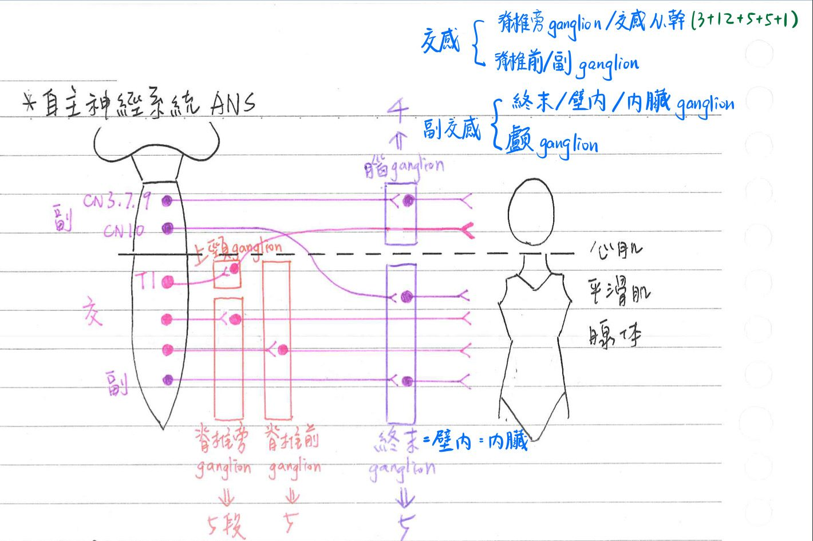
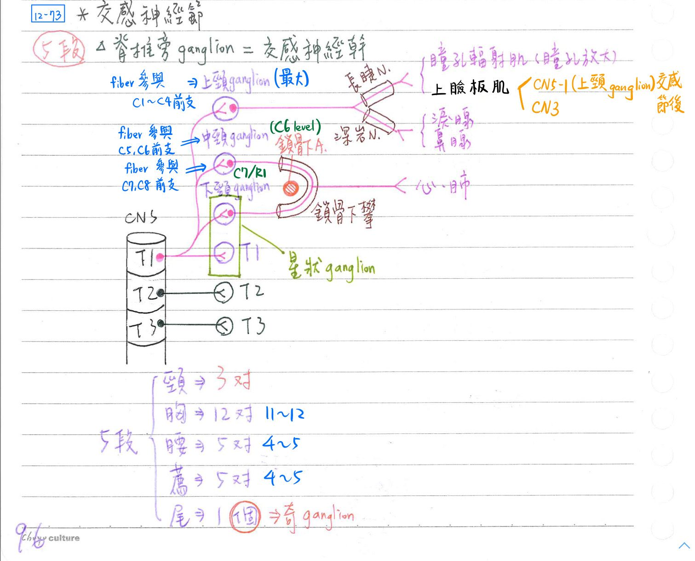
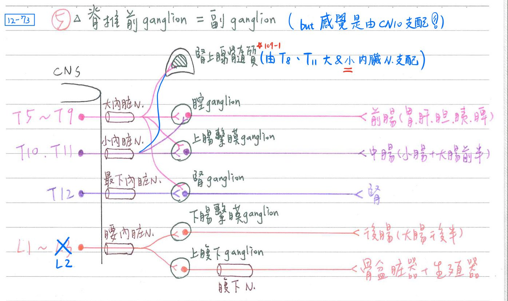
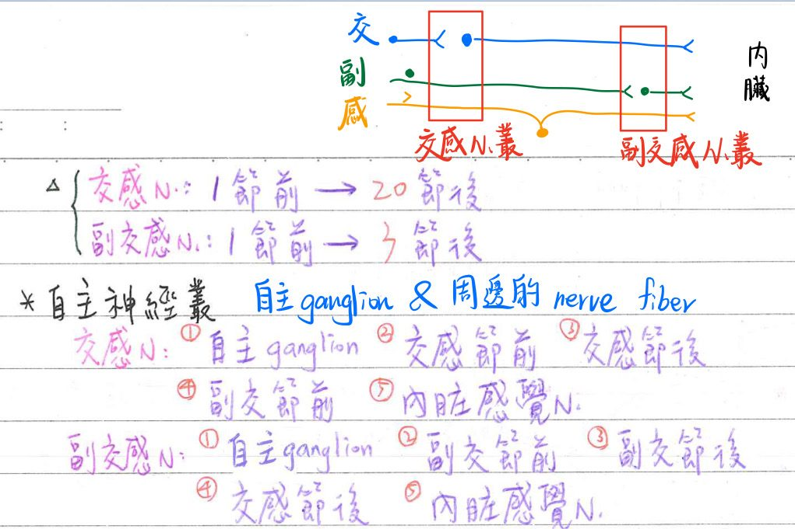
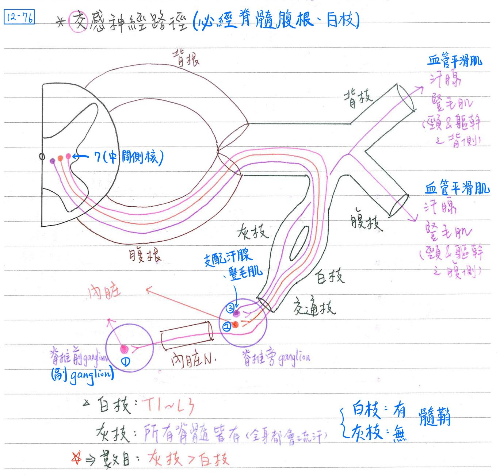
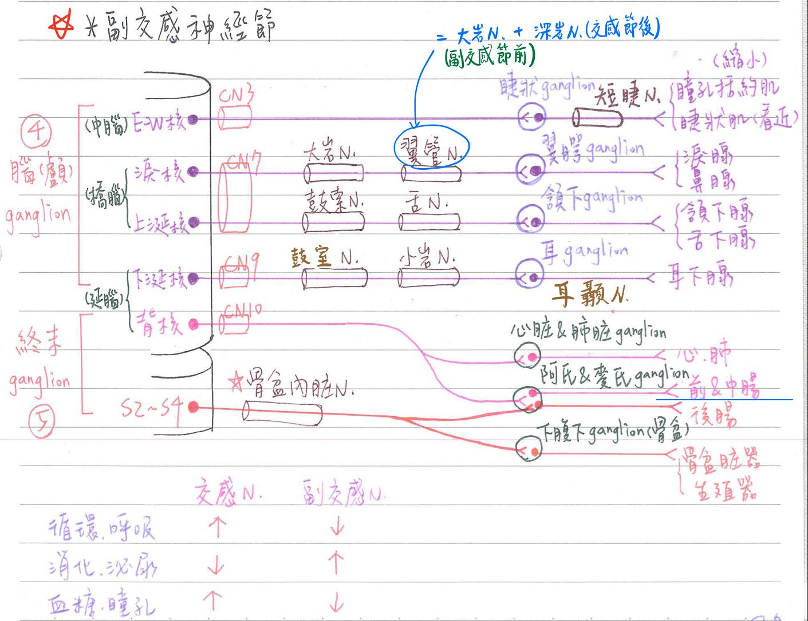

🧠 自律神經系統(ANS)
内臓輸出=自主神經系統(ANS)-概覽
- 特性：
- 自主的(autonomous)：不隨意，下視丘為自主神經之最高中樞
- 下視丘前核→副交感中樞；下視丘後核→交感中樞
- 下視丘脊隨徑(hypothalamospinal tract)：下視丘(後核/前核)→脊髓側角(T1~L2/S2~S4)
- 雙元控制(dual innervation)：一器官同時受交感神經及副交感神經支配；例外：
- 僅受交感神經支配：腎、腎上腺髓質、脾、汗腺、豎毛肌等
- 互相拮抗(antagonist)：交感神經及副交感神經之作用互為拮抗；例外：
- 男性性行為：勃起(副交感)、射精(交感)則為相輔相成 [伯父社交]
- 興奮交感神經及副交感神經皆促進淚腺、唾液腺(耳下/頷下/舌下腺)分泌
- 自主的(autonomous)：不隨意，下視丘為自主神經之最高中樞
- 體輸出(GSE) v.s.內臟輸出(GVE)：
性質 作用器 自中樞輸出之
神經元個數神經元位置 神經纖維種類 神經傳導物質 體
輸出隨意 骨骼肌 1 腦及脊髓前角 A Ach 內臟輸出 自主 心肌
平滑肌
腺體2(節前、節後) 節前：腦及脊髓側角
節後：自主神經節節前：B
節後：CAch或NE
- 解剖分類(anatomic division)：依解剖起源分
- 交感神經(胸腰輸出)：T1〜T12；LI〜L2(L3)；分佈遍及全身(內臓及體表)
- 副交感神經(腦薦輸出)：CN3, 7, 9, 10、S2〜S4；僅分佈於内臓
- 化學分類(chemical division)：依神經傅導物質分
- 分泌乙醯膽鹼性(cholinergic)
- 所有節前神經纖維(包括交感及副交感)
- 所有副交感節後神經纖維
- 分佈至體表(汗腺、豎毛肌等)之交感節後神經纖維
- 泌正腎上腺素性(noradrenergic)：分佈至內臓之交感節後神經纖維(汗腺、豎毛肌除外)
- 分泌乙醯膽鹼性(cholinergic)

自主神經節(autonomic ganglion)：節後神經元細胞本體所在地
- 在自主神經節中，可具中間神經元(small intensely fluroescent, SIF)，分泌dopamine以抑制節後神經元
交感神經節
- 脊椎旁神經節(paravertebral ganglion)=交感神經幹(sympathetic trunk)
- 頸部：3對
- 上頸神經節(發出的神經纖維參與★C1~C4之前枝)：位於顱骨正下方(★[107-2]@C1-C2高度)
- 體積最大：支配上瞼板肌(CN5-1交感節後, CN3)/瞳孔輻射肌(長睫N；CN5-1分支)、淚腺/鼻腺(深岩N)、唾液腺/汗腺、心臓(經sup. cardiac n.)等
- Horner syndrome(oculosympathetic palsy)：
- 頸部交感神經幹/上頸神經節受損(EX：肺尖之肺癌壓迫造成)
- 症狀：同側半臉無汗(anhidrosis)、眼瞼下垂(ptosis)、瞳孔缩小(miosis)
- 中頸神經節(發出的神經纖維參與C5~C6之前枝)：位於環狀軟骨C6高度
- 體積最小；支配心臟(經★mid. cardiac n)等
- 鎖骨下襻(ㄆㄢˋ)(ansa subclavia=subclavian loop)：連接中頸神經節舆下頸神經節
- 繞過鎖骨下A，屬交感神經
- 下頸神經節(發出的神經纖維參與C7~C8前枝)：位於C7橫突及R1之間
- ★星狀(stellate)神經節=下頸神經節+T1神經節：支配心臟(經inf. cardiac n)等
- 上頸神經節(發出的神經纖維參與★C1~C4之前枝)：位於顱骨正下方(★[107-2]@C1-C2高度)
- 胸部：11~12對
- 腰部：4~5對
- 薦部：4~5對
- 尾部：1個=奇神經節(ganglion impar)→左、右交感神經幹在下端集結
- 頸部：3對

- 脊椎前神經節(prevertebral ganglion)=副神經節(collateral ganglion)：
- 腔神經節(celiac ganglion)：支配前腸(胃、肝、膽、胰)等
- [重點]大內臓N(greater splanchnic n.)：含自T5~T9交感節前神經纖維
- 終至腔神經節(主要)&上腸繫膜神經節、腎神經節及★[109-1]腎上腺髓質(小内臓N也有支配)
- 亦含源自內臓之感覺神經纖維；支配膽囊的疼痛⇒所以會上腹痛(T5-9)
- [重點]大內臓N(greater splanchnic n.)：含自T5~T9交感節前神經纖維
- 上腸繫膜神經節(sup. mesenteric ganglion)：支配中腸(小腸+大腸前半)
- [重點]小内臓N(lesser splanchnic n.)：含自T10~T11交感節前神經纖維
- 終至上腸繫膜神經節(主要)及腔神經節
- 亦含源自內臓之感覺纖維；支配肚臍周圍的疼痛(T10)
- [重點]小内臓N(lesser splanchnic n.)：含自T10~T11交感節前神經纖維
- 腎神經節(renal ganglion)：支配腎臟
- [重點]最下內臟N(lowest splanchic)：含自T12交感節前神經纖維
- 終至腎神經節；亦含源自內臟之感覺神經纖維。
- [重點]最下內臟N(lowest splanchic)：含自T12交感節前神經纖維
- 下腸繫膜神經節(inf. mesenteric ganglion)：支配後腸(大腸後半)
- 腰內臓N(lumbar splanchnic n)：含自L1~L2交感節前神經纖維
- 終至下腸繫膜神經節(主要)及上腹下神經節；亦含源自內臟之感覺纖維
- 腰內臓N(lumbar splanchnic n)：含自L1~L2交感節前神經纖維
- 上腹下神經節(sup. hypogastric ganglion)/腹下神經節(hypostric ganglion)/薦前神經節(presacral ganglion)：from L1~L2；支配骨盆臟器、生殖器
- ★[110-2]腹下N(hypogastric n)：含自上腹下神經節之交感節後神經纖維
- 經下腹下神經叢，支配骨盆臟器、生殖器；亦含源自內臟之感覺纖維。
- ★[110-2]腹下N(hypogastric n)：含自上腹下神經節之交感節後神經纖維
- 薦內臟N(sacral splanchic n)：含自薦部交感神經幹之交感節後神經纖维
- 經下腹下神經叢；支配骨盆臟器、生殖器；亦含源自内臓之感覺神經纖維
- 腔神經節(celiac ganglion)：支配前腸(胃、肝、膽、胰)等

副交感神經節：終末神經節 & 顱神經節
- 終末神經節(terminal ganglion)=壁內神經節(intramural ganglion)[位於內臟壁中]=內臓神經節(visceral ganglion)：
- 心臟神經節(cardiac ganglion)
- 肺臓神經節(pulmonary ganglion)
- 阿氏神經節(Auerbach ganglion)=腸肌層神經節(myenteric ganglion)
- 麥氏神經節(Meissner ganglion)=黏膜下層神經節(submucosal ganglion)
- 下腹下神經節(inf. hypogastric ganglion)=骨盆神經節(pelvic ganglion)
<cf>上腹下神經節：是交感神經節
- 顱神經節(cranial ganglion)：
- 睫狀神經節(ciliary ganglion)
- 翼腭神經節(pterygopalatine ganglion)
- 頷下神經節(submandibular ganglion)
- 耳神經節(otic ganglion)
自主神經元之特性
- 分散性(divergency)
- 交感神經系統：1個節前神經元→10~20個節後神經元
- 副交感神經系統：1個節前神經元→1~3個節後神經元
- 神經纖維長度：
- 交感神經：節前神經纖維較短，節後神經纖維則較長
- 副交感神經：節前神經纖維較長，節後神經纖維則較短
自主神經叢(autonomic nerve plexus)：自主神經纖維形成之網路
- 自主神經叢=自主神經節+附近的神經纖維
- 交感神經叢(具節後神經元細胞本體)者：[=上述的脊椎前神經節，把節換成叢即可]
- 構成：交感節前神經纖維、自主神經節(ganglion)、交感節後神經纖維、副交感節前神經纖維、內臟感覺神經纖維等交織構成
- 副交感神經叢(具節後神經元細胞本體)者：[=上述的終末神經節，把節換成叢即可]
- 構成：副交感節前神經纖維、自主神經節(ganglion)、副交感節後神經纖維、交感節後神經纖維、內臟感覺神經纖維等交織構成
- 下腹下神經叢：具骨盆內臟N(副交感節前神經纖維)在此轉接，亦具腹下N/薦內臟N(交感節後神經纖維)在此經過
- 不具自主神經節(節後神經元細胞本體)的神經叢：
- 外頸動脈神經叢(external carotid plexus):：主含上頸神經節之交感節後神經纖維
→支配頷下腺、舌下腺
- 內頸動脈神經叢(internal carotid plexus)：主含上頸神經節之交感節後纖維
→支配上瞼板肌、瞳孔輻射肌、淚腺
- 鼓室神經叢(tympanic plexus)：位於中耳內壁隆岬上；主含上頸神經節之交感節後、下涎核之副交感節前纖維
→支配耳下腺
- 子宫陰道神經叢(uterovaginal plexus)=前列腺神經叢(prostatic plexus)：主含交感及副交感之節後神經纖維
→支配子宫、陰道、前列腺
- 外頸動脈神經叢(external carotid plexus):：主含上頸神經節之交感節後神經纖維

自主神經路徑(pathway)
交感神經系統
- [重點]白枝位於T1~L3；灰枝位於所有脊髓節段(因為全身都有汗腺)
- 必經脊隨腹根及白枝
- 白枝(white ramus)[T1~L3有]：★[110-2]所有節前神經纖維(具髓鞘⇒白)必經處，再
- 通往脊椎旁神經節，經突觸傳給節後神經元
- 穿越脊椎旁神經節，經内臓N(splanchnic n.)抵達脊椎前神經節，經突觸傳給節後神經元
- 內臟輸入之感覺神經纖維經白枝回到中樞
- 灰枝(gray ramus)[All；因為全身都有汗腺]：
- 只有★[110-2]從脊椎旁神經節通往體表之節後神經纖維(無髓鞘⇒灰)通過
- 其除折返通過灰枝外，亦需借道脊神經之腹枝或背枝方能抵達體表之汗腺、豎毛肌及血管平滑肌

副交感神經系統
- 動眼神經CN3)：支配瞳孔括約肌、睫狀肌
- 路徑：EW核(Edinger-Westphal)→睫狀神經節(ciliary)→瞳孔括約肌、睫狀肌
- 短睫神經(short ciliary n)：含睫狀神經節之神經纖維(副交感節後)；支配睫狀肌及瞳孔括約肌
- <cf>長睫神經(long ciliary n)：含上頸神經節之神經纖維(交感節後)；支配上瞼板肌、瞳孔幅射肌[經CN5-1路徑]
- 路徑：EW核(Edinger-Westphal)→睫狀神經節(ciliary)→瞳孔括約肌、睫狀肌
- 顏面神經(CN7)：支配淚腺、鼻腺
- 路徑：淚核(lacrimal)→翼腭神經節(pterygopalatine)→淚腺、鼻腺
- 大岩N、翼管N：含淚核之神經纖維(副交感節前)等
- 翼腭神經節之節後神經纖維：
- 沿顴N、顴顳N、淚N至淚腺
- 沿鼻N至鼻腺
- 顏面神經(CN7)：支配頷下腺、舌下腺
- 路徑：上涎核(sup.salivatory)→頷下神經節(submandibular)→頷下腺、舌下腺
- 鼓索N(chorda tympani)、舌N：含上涎核之神經纖維(副交感節前)等
- 頷下神經節之節後神經纖維：直接至頷下腺；再沿舌N至舌下腺
- 舌咽神經(CN9)：支配耳下腺
- 路徑：下涎核(inf. salivatory n.)→耳神經節(otic)→耳下腺
- 鼓室N(tympanic n.)、小岩N：含下涎核之神經纖維(副交感節前)
- 耳神經節之節後神經纖維：沿耳顳N至耳下腺。
- 路徑：下涎核(inf. salivatory n.)→耳神經節(otic)→耳下腺
- 迷走神經(CN10)：支配胸腔&腹腔臓器(前腸+中腸)
- 路徑：迷走神經背核(dorsal nucleus of vagus)→終末神經節→內臟
- ★[110-2]骨盆內臟神經(pelvic splanchnic n.)：支配後腸、骨盆臓器、★[110-1]生殖器(男性勃起)
- 源自S2~S4之副交感節前神經纖維
- 路徑：脊髓S2~S4中間側核→Auerbach & Meissner神經節(支配後腸)、下腹下神經節(支配骨盆臓器、生殖器)
- 亦含源自內臟之感覺神經纖維

[重點]自主神經系統功能
- 交感：非常應急系統(fight or flight；打或逃)
- 副交感：平常休養生息(vegetative；營養系統)
| 交感神經 | 副交感神經 | |
|---|---|---|
| 心臓循環、呼吸系統 | ↑(up) | ↓ |
| 消化系统、泌尿系統 | ↓ | ↑(up) |
| 血糖 | ↑(up) | ↓ |
| 男性性行為 | 射精 | 勃起 |
| 瞳孔 | 放大 | 縮小 |
| [重點]睫狀肌(水晶體/焦距) | 舒張(扁平/看遠) | 收縮(變凸/看近) |
ANS表格式摘要
交感神經系統
| 節前神經核 | 節前神經節 | 作用於 |
|---|---|---|
| T1 | 上頸神經節(長睫N) | 瞳孔輻射肌、上瞼板肌 |
| T1 | 上頸神經節 | 頷下/舌下/耳下腺 淚腺、鼻腺、汗腺 心 |
| T1 | 中頸神經節 | 心 |
| T1 | 下頸神經節/星狀神經節 | 心 |
| T2~T4 | 胸部交感神經幹 | 心、肺 |
| T5~T9(大內臟N) | 腔神經節 | 前腸 |
| T5~T9(大內臟N) | 腎上腺髓質 | X |
| T10~T11(小內臟N) | 上腸繫膜神經節 | 中腸 |
| T12(下內臟N) | 腎神經節 | 腎臟 |
| L1~L2(腰內臓N) | 下腸繋膜神經節 | 後腸 |
| L1~L2(腰內臓N) L1~L2 | 上腹下神經節(腹下N) 薦部交感神經幹(薦內臟N) | 膀胱、肛門/尿道括約肌 輸精管/儲精/前列腺、 子宮/陰道 |
| T12~L2 | 腎神經節、上腹下神經節 | 卵巢、輸卵管、輸尿管 |
副交感神經系統
| 節前神經核 | 節前神經節 | 作用於 |
|---|---|---|
| E-W核 (CN3) | 睫狀神經節(短睫N) | 睫狀肌、曈括括約肌 |
| 上涎核(CN7→鼓索N) | 頷下神經節(舌N) | 頷下腺、舌下腺 |
| 淚核(CN7→大岩N) | 翼顎神經節(上頷N) | 淚腺、鼻腺 |
| 下涎核(CN9→小岩N) | 耳神經節(耳顳N) | 耳下腺 |
| 迷走神經背核(CN10) | 終末神經節 | 心、肺 |
| 迷走神經背核(CN10) | Auerbach / Meissner | 前腸 |
| 迷走神經背核(CN10) | Auerbach / Meissner | 中腸 |
| S2~S4(骨盆內臓N) | Auerbach / Meissner | 後腸 |
| S2~S4(骨盆內臓N) | 下腹下神經節 | 膀胱、肛門/尿道括约肌 輸精管/儲精囊/前列腺 子宮/陰道 |
| 迷走神經背核(CN10) S2~S4(骨盆N) | 終末神經節 | 卵巢、輸卵管、輸尿管 |
📖 書本補充：與筆記不同或筆記沒寫到的地方
⚠️
以下為對照書本後整理，筆記原文未更動。標「筆記 vs 書」的是兩邊寫法不同、建議回頭確認的地方。
自主神經系統的分布（p.109–110）
- 交感節前神經元：T1–L2 脊髓外側角的中間外側細胞柱（intermediolateral cell column）；副交感節前：S2–S4 脊髓外側角，以及 CN III、VII、IX、X 的相關神經核。
- 交感節後神經元：脊柱旁神經節（節後纖維到體壁及大部分胸腔臟器）；脊柱前（主動脈前）神經節（節後纖維到腹骨盆腔臟器）。
- 內臟神經（splanchnic nerves）的纖維性質：
- 心肺內臟神經＝節後纖維（在脊柱旁神經節已形成突觸）。
- 腹骨盆內臟神經（大、小、最小及腰內臟N）＝節前纖維，連接脊柱旁與脊柱前神經節。
- 只有骨盆內臟神經走的是副交感纖維，其餘內臟神經都是交感。
- 分布範圍：交感幾乎全身；副交感較局限，到不了體壁和四肢。
- 書的提示：
- T1 以上及 L2 以下只有灰交通枝，沒有白交通枝。
- 交感節前神經元只在 T1–L2，但脊柱旁神經節（交感神經鏈）分布整條脊柱。
- 到體壁的交感纖維一定在脊柱旁神經節形成突觸；到臟器的則不一定（到心、肺的會在脊柱旁神經節突觸）。
- 白交通枝較白是因為節前纖維有髓鞘（許旺細胞膜為脂質）；節後纖維無髓鞘→灰交通枝。
- 筆記 vs 書：白交通枝的範圍，筆記寫「白枝位於 T1～L3」；書上寫T1–L2（考題 102-1-18、110-2-8 也依此：L1 有白＋灰交通枝，L4 只有灰交通枝）。
自主神經系統的功能（p.113）
- 書的對照表：瞳孔（交感放大／副交感縮小）；唾液腺（交感抑制分泌／副交感刺激分泌）；胃（抑制／刺激消化活動）；肝臟及膽囊（交感刺激肝臟釋放葡萄糖／副交感刺激膽囊分泌膽汁）；腸道（抑制／刺激蠕動）；心臟（加速／變慢）；氣管（擴張／收縮）；腎上腺（交感刺激分泌腎上腺素和正腎上腺素／副交感無支配）；膀胱（交感使膀胱內括約肌收縮→抑制排尿／副交感使逼尿肌收縮→排尿）；生殖（交感射精／副交感勃起）。
- 筆記 vs 書：唾液腺，筆記寫「交感與副交感皆促進淚腺、唾液腺分泌」（拮抗的例外）；書的表格寫交感＝抑制唾液分泌。
- 書的提示：交感＝面對緊急狀況的分解代謝（消化、排泄都被抑制，氣管擴張以利呼吸）；副交感＝合成代謝（吃飽坐在沙發看報紙）。
頸神經節（p.114–115）
- 頸上神經節：位於 C1 和 C2 椎骨高度；灰交通枝到 C1–C4 脊神經；發出頸上心神經；節後纖維纏繞內頸及外頸動脈的分支到頭部平滑肌與臟器（如唾液腺）。書上舉的平滑肌例子是「眼球的睫狀肌」。Claude 註：交感到眼的主要目標是瞳孔開大肌與上瞼板肌（筆記寫法），睫狀肌主要受副交感支配；書上這個例子不要當作重點。
- 頸中神經節：位置不定，一般在甲狀腺下動脈的前面，有時會沒有；灰交通枝到 C5–C6；發出頸中心神經；支配甲狀腺。（筆記寫位於環狀軟骨 C6 高度。）
- 頸下神經節：在 C7 橫突前面、椎動脈起源處的後面；常與第1胸神經節癒合成星狀神經節；灰交通枝到 C7–C8；發出頸下心神經；節後纖維經由椎動脈進入顱腔。
- 書的提示：到頭頸部及上肢的交感纖維都已在頸神經節突觸，所以全為節後纖維；到體壁者進入頸、臂神經叢跟著脊神經走，到臟器者纏繞在動脈壁上。
- 考題補充（105-1-7）：頸上神經節位在頭最長肌的前面（不在頸動脈鞘內）；其節後纖維與 CN IX、X 共同形成咽神經叢，並經 CN V 的分支到唾液腺。
心臟和肺臟的神經支配（p.194）
- 交感：節前神經元在 T1–T5（或 T6）外側角，經交感神經鏈，節後神經元在頸或上胸神經節。
- 副交感：迷走神經背核→迷走神經；節後神經元在心房壁或心房中隔（心臟）、肺神經叢內及支氣管樹分支沿線（肺）。
- 終止位置：心神經叢在氣管分叉處前面；肺神經叢主要在肺根後面。
- 作用：交感→促進心跳、增加收縮力道、促進血流；肺：支氣管擴張、血管收縮、腺體分泌減少。副交感→心跳及收縮力道降低；肺：支氣管收縮、血管擴張、腺體分泌增加。
- 筆記 vs 書：筆記的交感表格寫心、肺節前來自 T2～T4；書上寫 T1–T5（或 T6）。
腹部的自主神經支配（p.228）
- 書的表格：
- 內臟大神經 T5–T9→腹腔神經節→約略為前腸器官。
- 內臟小神經 T10–T11→主動脈腎神經節（aorticorenal ganglia）。
- 內臟最小神經 T12、腰內臟神經 L1–L3→腸繫膜上和下神經節及神經叢內的神經節。
- 支配器官：T8–T12 支配中腸器官；T12 支配腎臟；L1–L2 支配後腸器官。
- 筆記 vs 書：
- 內臟小神經終點：筆記寫「上腸繫膜神經節（主要）」；書寫主動脈腎神經節。書的提示也說內臟小、最小神經的終點有不同的說法，最常考且一致的是內臟大神經。
- 腰內臟神經起源：筆記寫 L1～L2；書上表格寫 L1–L3。
- 副交感：迷走神經→食道至橫結腸；骨盆內臟神經→降結腸到直腸；節後神經元都在臟器壁上的神經節。Claude 註：書上這張表把起源欄位排反了（印成「延髓—骨盆內臟」「S2–S4—迷走」），正確是迷走神經起自延髓、骨盆內臟神經起自 S2–S4，與筆記相同。
- 內臟感覺與骨盆疼痛線（pelvic pain line）（筆記沒寫）：
- 痛覺：疼痛線以上跟著交感走，以下跟著副交感（骨盆內臟神經）走；但乙狀結腸一半以後到直腸上半雖有腹膜覆蓋，仍算在線以下，痛覺跟副交感走。
- 反射（如飽足、拉扯）：都跟著副交感走——橫結腸一半以前走迷走神經，橫結腸一半以後到骨盆走骨盆內臟神經。
- 疼痛線基本上沿著腹膜範圍：器官有腹膜貼於其上（不論腹膜內或腹膜外）就在線以上。
- 跟著交感走的感覺纖維同樣走在內臟神經內，經白交通枝回到脊神經，再進入背角。
- 考題應用：腎結石痛→內臟最小神經（102-1-15）；胃潰瘍痛→內臟大神經（102-2-19）；闌尾痛→內臟小神經（中腸，113-1-21）；胃飽足感→迷走神經（106-1-4）。
頭部的副交感神經節（p.475–476）
- 書的對照表（節前神經元→節前纖維所走的神經→節後纖維所走的神經→支配）：
- 睫狀：E-W 核→動眼神經的下分支→短睫狀神經→睫狀肌、瞳孔括約肌（看近物時的調適作用）。
- 翼腭：上涎核→岩大神經→腭大和腭小神經、顴神經→淚神經→淚腺、腭腺及鼻腺。
- 下頷下：上涎核→鼓索→舌神經（部分）→下頷下及舌下腺。
- 耳：下涎核→鼓室神經、岩小神經→耳顳神經→腮腺。
- 筆記 vs 書：翼腭神經節的節前神經元，筆記寫「淚核（lacrimal nucleus）」；書上表格把翼腭與下頷下神經節都歸給上涎核。兩種寫法在不同教科書都有，遇到選項時注意題目用語。
- 書的提示：到下頷下腺和腮腺的節前纖維都會通過中耳；耳神經節位在卵圓孔正下方、V3 的內側，是頭頸部副交感神經節中最後方者（翼腭神經節則在翼突與腭骨之間，較前方）。
- 考題補充：耳神經節不是感覺神經節（前庭、膝狀、螺旋神經節是）；三叉神經運動核不是副交感核。
📝 書中歷屆考題（點選答案作答）
102-1-18p.110
連接交感神經鏈 (sympathetic chain) 與 L4 脊神經的是：
💡 交感節前神經元最低只到 L2，要到 L4 須先在神經鏈內下行到 L4 的神經節突觸，節後纖維再經灰交通支進入脊神經。
110-2-8p.111
連接交感神經鏈 (sympathetic chain) 與 L1 脊神經的是：
💡 T1–L2 的脊神經與交感神經鏈之間都有白和灰交通枝相連。
110-2-26p.111
來自薦部的副交感節前神經 (preganglionic parasympathetic fiber)，主要經由下列何者進入骨盆神經叢 (pelvic nerve plexus)？
111-1-16p.111
有關胸部交感神經節 (thoracic sympathetic ganglion) 的敘述，下列何者最為恰當？
💡 胸部神經節也有往上走的纖維支配頭頸及上肢；胸部交感神經節與胸神經之間有白、灰交通枝；下7個神經節發出的仍是節前纖維，到脊柱前神經節才突觸。
112-1-23p.112
關於骨盆腔的自主神經 (autonomic nerve)，下列敘述何者錯誤？
💡 支配骨盆內臟的交感纖維包含來自腰和薦交感神經幹的纖維。
107-1-17p.116
有關頸部交感神經幹 (sympathetic trunk) 之敘述，下列何者正確？
💡 頸部交感神經幹沒有的是白交通枝；頸上神經節的灰交通枝到 C1–C4；三個頸神經節都有發出心神經。
105-1-7p.116
下列有關上頸神經節 (superior cervical ganglion) 的敘述，何者錯誤？
💡 頸上神經節位在頭最長肌的前面。
107-2-17p.116
上頸神經節 (superior cervical ganglion) 相對於下列何脊椎骨高度？
💡 頸上神經節由上4個頸神經節癒合而成，位置在最高頸椎的兩側。
103-2-15p.229
內臟大神經 (greater splanchnic nerve) 主要連接至：
104-2-14p.229
內臟大神經 (greater splanchnic nerve) 起自脊髓的那個段位？
102-1-15p.229
腎內結石的疼痛經由下列何者傳導？
💡 腎臟有腹膜覆蓋（雖然是腹膜外），痛覺走支配腎臟的交感神經，即內臟最小神經。
102-2-19p.229
胃潰瘍的疼痛由下列何者傳導？
💡 胃在骨盆疼痛線以上，痛覺跟著交感走；支配前腸器官的交感纖維是內臟大神經。
106-1-4p.229
胃飽足的感覺主要由下列何者攜帶？
💡 飽足感屬於拉扯性質的反射，反射跟著副交感走（胃的副交感為迷走神經）。
113-1-21p.230
闌尾的疼痛主要由下列何者傳導？
💡 闌尾有闌尾繫膜覆蓋，在骨盆疼痛線以上，痛覺走交感；闌尾屬中腸，交感來自內臟小神經。
101-2-2p.476
頭頸部諸副交感神經之神經節當中解剖位置最後 (posterior) 者為：
💡 耳神經節在卵圓孔正下方、翼突後面；翼腭神經節在翼突與腭骨之間，更前方。
105-1-4p.476
下列何者不是副交感神經核？
103-2-9p.476
下列何者不是感覺神經節？